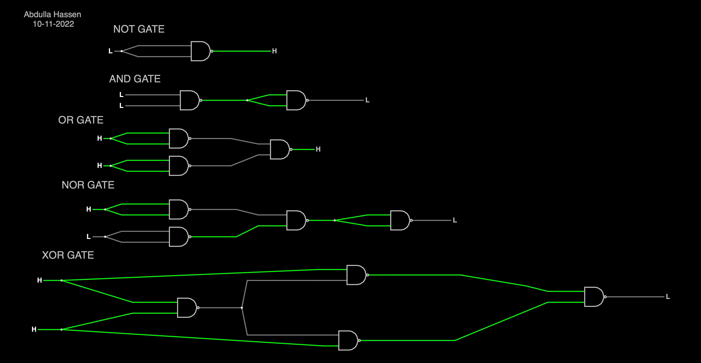

Name: Abdulla Hassen
Journal: J1016
Date: 30-aug-2022
I received assistance from: n/a
I assisted: n/a

What did I learn? What is the "big idea"? I learned how to make circuits using NAND gates and boolean inputs. The big idea is that logic gates can be translated into circuits.
What challenges did I encounter? I found it challenging to think of the logic behind creating the XOR gate and NOR gate because they were multi-step problems.
How could this experience be improved? This experience could give more instructions on how the logic works.
Free Reflection: How has what I've learned affected my thinking? What I've learned has helped me understand how these circuits work and how I can use them and boolean algebra in programming.